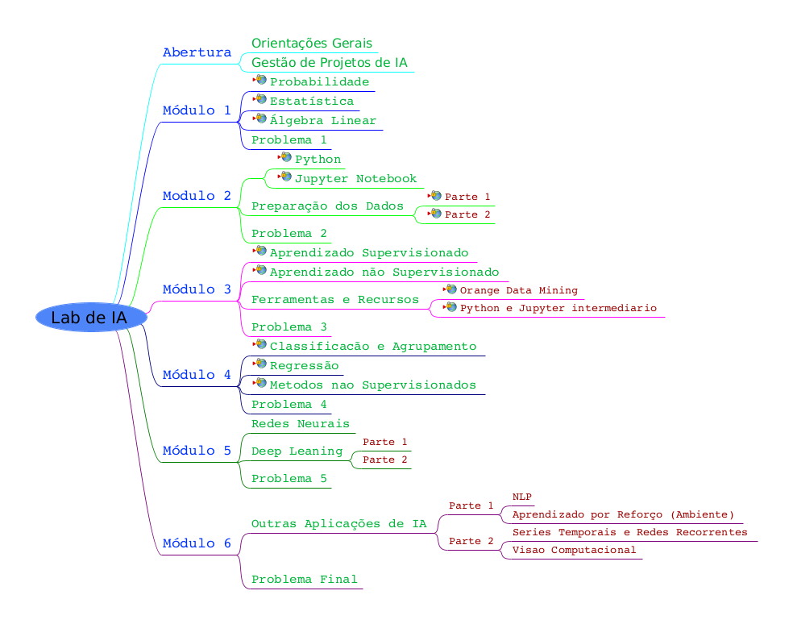

Lab de IA

Lab de IA
Abertura
Orientações Gerais
Gestão de Projetos de IA
Módulo 1
Probabilidade
Estatística
Álgebra Linear
Problema 1
Modulo 2
Python
Jupyter Notebook
Preparação dos Dados
Parte 1
Parte 2
Problema 2
Módulo 3
Aprendizado Supervisionado
Aprendizado não Supervisionado
Ferramentas e Recursos
Orange Data Mining
Python e Jupyter intermediario
Problema 3
Módulo 4
Classificacão e Agrupamento
Regressão
Metodos nao Supervisionados
Problema 4
Módulo 5
Redes Neurais
Deep Leaning
Parte 1
Parte 2
Problema 5
Módulo 6
Outras Aplicações de IA
Parte 1
NLP
Aprendizado por Reforço (Ambiente)
Parte 2
Series Temporais e Redes Recorrentes
Visao Computacional
Problema Final